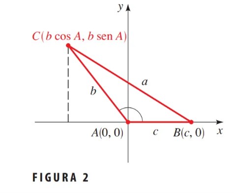
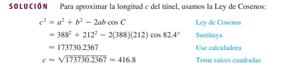
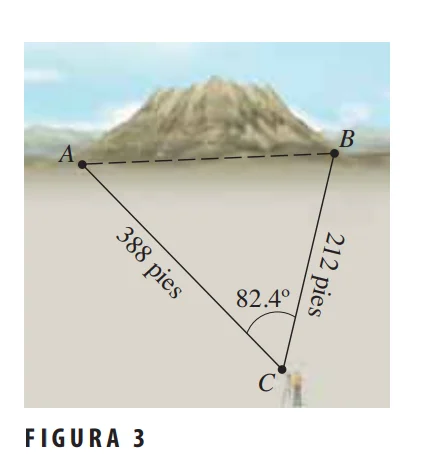

La Ley de Cosenos es una generalización del Teorema de Pitágoras que se aplica a cualquier tipo de triángulo, ya sea rectángulo o no. Esta ley relaciona los lados de un triángulo con el coseno de uno de sus ángulos, lo que permite calcular un lado cuando se conocen los otros dos lados y el ángulo opuesto, o bien para encontrar un ángulo cuando se conocen los tres lados.
Se usa principalmente en triángulos oblicuángulos (triángulos que no tienen un ángulo recto) para resolver problemas de geometría y trigonometría. Es especialmente útil cuando no se dispone de un ángulo recto que permita aplicar el Teorema de Pitágoras.
Fórmulas y teoremas
La Ley de Cosenos se expresa de la siguiente manera para un triángulo con lados \( a \), \( b \), y \( c \), y ángulos \( A \), \( B \), y \( C \) opuestos a estos lados:
\[ c^2 = a^2 + b^2 - 2ab \cdot \cos(C) \]
De manera similar, también se puede escribir para los otros lados:
\[ a^2 = b^2 + c^2 - 2bc \cdot \cos(A) \]
\[ b^2 = a^2 + c^2 - 2ac \cdot \cos(B) \]
Demostración
Para probar la Ley de Cosenos, ponga el triángulo ABC de modo que A esté en el origen, como se muestra en la Figura 2. Las coordenadas de los vértices A y B son \( (c, 0) \) y \( (b \cos A, b \sin A) \) respectivamente. (El lector debe comprobar que las coordenadas de estos puntos serán las mismas si trazamos el ángulo \( A \) como ángulo agudo.) Usando la Fórmula de Distancias, obtenemos:

\[ a^2 = \left(b \cdot \cos(A) - c\right)^2 + \left(b \cdot \sin(A) - 0\right)^2 \]
\[ a^2 = b^2 \cos^2(A) - 2bc \cos(A) + c^2 + b^2 \sin^2(A) \]
\[ a^2 = b^2(\cos^2(A) + \sin^2(A)) - 2bc \cos(A) + c^2 \]
\[ a^2 = b^2 + c^2 - 2bc \cos(A) \]
Esto prueba la primera fórmula. Las otras dos fórmulas se obtienen de la misma forma si se coloca cada uno de los otros vértices del triángulo en el origen y se repite el argumento precedente.
Ejemplo
Un túnel se ha de construir por una montaña. Para estimar la longitud del túnel, un topógrafo hace las mediciones que se ven en la Figura 3. Use la información del topógrafo para aproximar la longitud del túnel.

